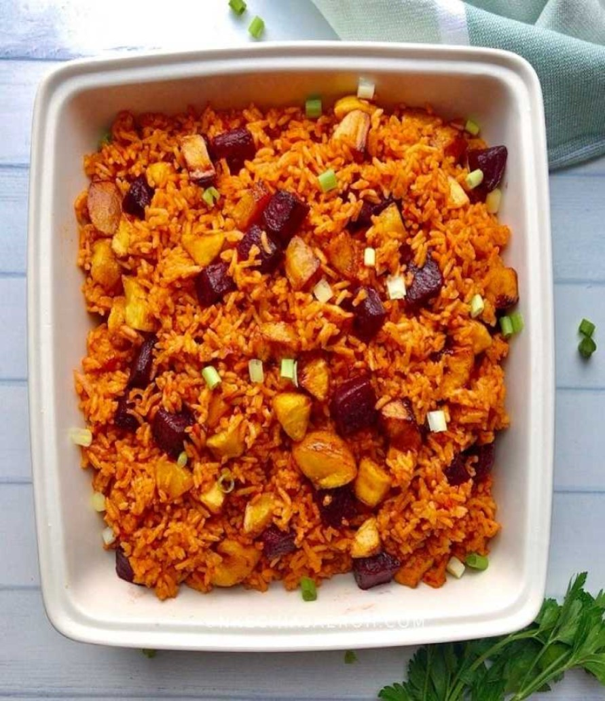

JOLLOF RICE

jollof rice, is a rice dish from West Africa. The dish is typically made with long-grain rice,
tomatoes, onions, spices, vegetables and meat in a single pot, although its ingredients and
preparation methods vary across different regions
There are many different ways to cook Jollof Rice. It is a dish made with rice, tomatoes, tomato paste, onions,
red bell pepper, scotch bonnet peppers, salt, and spices.
INGREDIENTS
- 5 medium sized Roma tomatoes, roughly chopped
- 1 red bell pepper, roughly chopped
- 1 medium sized onion, roughly chopped, set aside
- 2 scotch bonnet peppers (habanero peppers as they are sometimes called)
- 1/4 cup of groundnut oil
- 3 tbsp tomato paste
- 2 cups of parboiled rice
- 2 1/2 cups of chicken stock
- 1 tsp salt to taste
- 1/2 tsp curry powder
- 1/2 tsp thyme
- 1 tsp All purpose seasoning
- 1 Knorr stock cube
- 3 bay leaves
- Water, as needed
PREPARATION
- Blend your tomatoes, red pepper, scotch bonnet peppers in a food processor
or blender for about 45 seconds, make sure that everything is blended well.
- In a medium sized pot, heat your oil on medium-high heat.
- Once the oil is heated add the onions you set aside and fry just until they turn golden brown.
- Once the onions, have turned brown in color add the tomato paste and fry for 2-3 minutes.
- Then add the blended tomato mixture (reserve about 1/4 cup and set aside) and
fry the mixture with the onions and tomato paste for about 30 minutes.
- Make sure you stir consistently so that the tomato mixture does not burn.
- After 30 minutes, turn the heat down to medium, and add the chicken stock.
- Mix and add your seasonings (salt, curry powder, thyme, all purpose seasoning, and the Knorr stock cube).
- Continue to boil for 10 minutes.
- Add the parboiled rice to the pot and mix it very well with the tomato stew.
- At this point if you need to add water so that the rice is level with the tomato mixture/chicken stock go ahead and do so.
- Add the bay leaves, cover the pot, and cook on medium to low heat for 15-30 minutes.
- When the liquid has almost dried up add the remaining tomato stew, cover, and let it cook for another 5-10 minutes
heat until the liquid has completely dried up.
- Turn off the heat, mix thoroughly, and your Jollof Rice is ready to be eaten!
Now you can serve your delicious jellof rice and enjoy!!